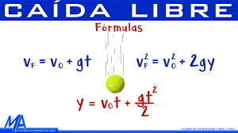
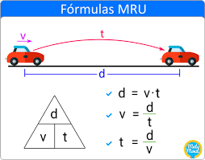
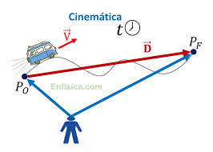

Caída Libre
Ejercicio 1: Un objeto se deja caer desde una altura de 20 metros. ¿Cuánto tiempo tardará en llegar al suelo?
Movimiento Rectilíneo Uniforme
Ejercicio 2: Un coche se mueve a una velocidad constante de 60 km/h. ¿Cuánto tiempo tardará en recorrer 150 km?
Cinemática
Ejercicio 3: Un ciclista parte del reposo y acelera uniformemente a 2 m/s². ¿Qué distancia recorrerá en 5 segundos?